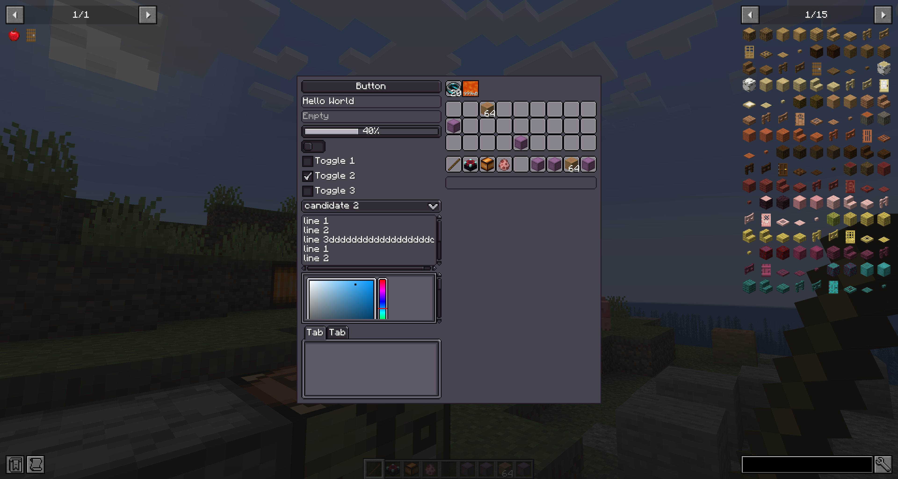
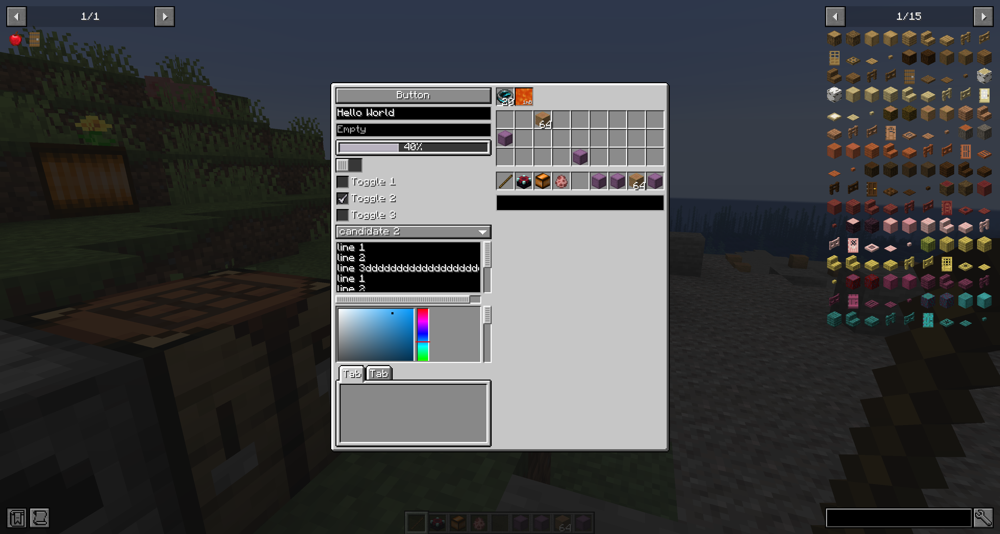
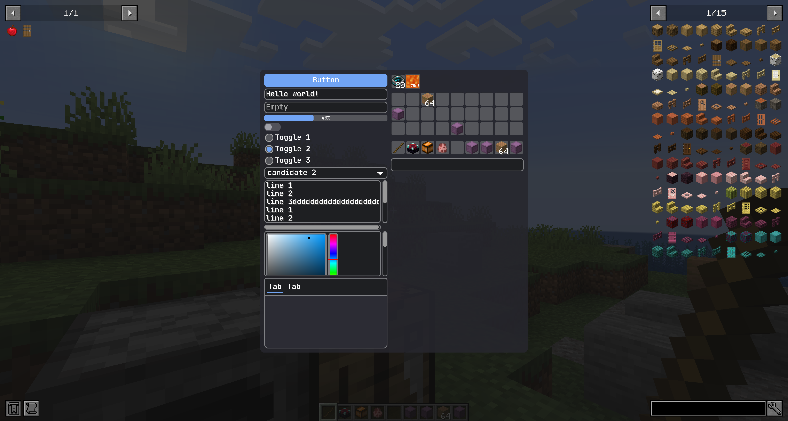

StyleSheet
你可以使用 LDLib Style Sheet（LSS）来为 UI 设置样式。LSS 文件是受 HTML 中 CSS 启发的文本文件。LSS 语法与 CSS 语法相同，但 LSS 包含了一些覆盖和定制，以更好地与 LDLib2 UI 配合使用。
LSS 允许你将表现层与逻辑层分离，使 UI 代码更清晰、更易于维护。
LDLib2 中的 Style 是什么
在介绍 LSS 本身之前，首先需要理解 Style 在 LDLib2 中的含义以及样式的内部工作原理。
如果你熟悉 CSS，这些概念应该会很自然。
LDLib2 中的 Style 指影响 UI 元素渲染方式的任何视觉或布局相关配置，与服务端逻辑无关。
例如：
layout（尺寸、位置、flex 行为）backgroundfont-size、alignment等
实际上，你已经了解的 layout 系统本身就是一种 Style。
每个 UIElement 可以定义多个样式，单个样式属性可以有来自不同来源的多个候选值。
在内部，每个 UI 元素维护一个 StyleBag，它：
- 存储应用于元素的所有样式值
- 解决样式之间的冲突
- 计算用于渲染的最终有效样式
最终样式由优先级决定，而非应用顺序。
Style 来源与优先级
每个样式值都有一个 StyleOrigin，它定义了样式的来源和优先级强度。
StyleOrigin
public enum StyleOrigin {
/**
* Default style defined by the UI component itself
*/
DEFAULT(0),
/**
* Style defined in an external stylesheet (LSS)
*/
STYLESHEET(2),
/**
* Inline style set directly in code
*/
INLINE(3),
/**
* Style applied by animations
*/
ANIMATION(4),
/**
* Important style that overrides all others
*/
IMPORTANT(5);
}
优先级较高的样式会覆盖优先级较低的样式：
DEFAULT<STYLESHEET<INLINE<ANIMATION<IMPORTANT
这种设计确保：
- 组件有合理的默认值
- 样式表定义全局外观
- 内联样式可以覆盖样式表
- 动画可以临时覆盖视觉效果
IMPORTANT样式始终优先
可定制的 Style
LDLib2 提供了多种定制 UI 样式的方式。 你可以根据需要自由混合使用这些方法。
Note
本页不会介绍所有支持的样式及其行为。每个 UI 组件在其 wiki 页面上记录了它支持的样式。
每个 UI 组件都暴露了它支持的 Style 对象，允许你直接通过代码配置样式。
例如，在 layout 中，#layout(...) 和 #getLayout() 都基于相同的底层 Style 系统。layout 是所有 UI 元素上可用的共享样式。
此外，一些组件提供了自己的专用样式。
例如，Button 暴露了一个 buttonStyle(...) API 用于配置按钮特定的视觉属性。
通过代码定制 Style
有多种方法可以设置样式。
var button = new Button();
// direct call
button.getStyle()
// set background texture
.background(SpriteTexture.of("photon:textures/icon.png"));
// set tooltips
.tooltips("This is my tooltips")
// set opacity
.opacity(0.5);
// chain call, return button itself for chain calls
button.buttonStyle(style -> {}).style(style -> style
.background(SpriteTexture.of("photon:textures/icon.png"));
.tooltips("This is my tooltips")
.opacity(0.5)
);
// lss text
button.lss("background", "sprite(ldlib2:textures/gui/icon.png)");
button.lss("tooltips", "This is my tooltips");
button.lss("opacity", 0.5);
let button = new Button();
// direct call
button.getStyle()
// set background texture
.background(SpriteTexture.of("photon:textures/icon.png"));
// set tooltips
.tooltips("This is my tooltips")
// set opacity
.opacity(0.5);
// chain call, return button itself for chain calls
button.buttonStyle(style => {}).style(style => style
.background(SpriteTexture.of("photon:textures/icon.png"));
.tooltips("This is my tooltips")
.opacity(0.5)
);
// lss text
button.lss("background", "sprite(ldlib2:textures/gui/icon.png)");
button.lss("tooltips", "This is my tooltips");
button.lss("opacity", 0.5);
上述所有方法都可以用于设置样式，但它们并不等效。
- 使用
getStyle()或style(...)默认以INLINE来源设置样式。 - 使用
lss(...)默认以STYLESHEET来源设置样式。
如果你想使用这些 API 以不同的 StyleOrigin 分配样式，可以在应用样式时显式指定来源，如下所示：
通过 Stylesheet 定制 Style
虽然直接在代码中设置 UI 元素样式很方便，但当你的项目涉及大量 UI 设计时，这很快就会变得繁琐且重复。
特别是：
- 将相同的样式应用于许多 UI 元素需要重复代码。
- 更新共享样式（例如更改背景纹理）可能需要手动修改每个相关的 UI 元素。
更重要的是，如果你希望 UI 样式可被玩家定制——例如允许通过资源包覆盖样式——纯粹在代码中管理样式就变得不切实际。
使用 stylesheets（LSS） 可以：
- 在多个 UI 元素之间集中和重用样式。
- 从单一位置修改整个 UI 的外观。
- 将 UI 样式暴露给资源包以便于定制。
因此，对于大型项目，样式表是管理和统一 UI 样式的推荐方式。
语法
如果你熟悉 CSS，你会对 LSS 的语法非常熟悉。
一个 LSS 由以下部分组成：
- 样式规则，包括一个
selector和一个declaration block。 - 选择器，用于标识样式规则影响哪个 UI 元素。
- 声明块，在花括号内，包含一个或多个样式声明。每个样式声明有一个属性和一个值。每个样式声明以分号结尾。
使用规则进行样式匹配
以下是样式规则的一般语法：
当你定义样式表时，可以将其应用于 UI 树。选择器与元素匹配以解析 LSS 中哪些属性适用。如果选择器匹配某个元素，则样式声明应用于该元素。
例如，以下规则匹配任何 Button 对象：
button {
base-background: built-in(ui-mc:RECT_BORDER);
hover-background: built-in(ui-mc:RECT_3);
pressed-background: built-in(ui-mc:RECT_3) color(#dddddd);
padding-all: 3;
height: 16;
}
支持的选择器类型 LSS 支持多种简单和复杂选择器，它们根据不同条件匹配元素，例如：
- 组件类型名
- 分配的
id - LSS
classes列表 - 元素在 UI 树中的位置及其与其他元素的关系
如果一个元素匹配多个选择器，LSS 会应用优先级较高的选择器的样式。
LSS 支持一组简单选择器，它们与 CSS 中的简单选择器类似但不完全相同。下表提供了 LSS 简单选择器的快速参考。
| 选择器类型 | 语法 | 匹配 |
|---|---|---|
| 组件选择器 | type {...} |
特定组件类型的元素。 （例如 button、text-field、toogle） |
| 类选择器 | .class {...} |
具有指定 LSS 类的元素。 （例如 .__focused__） |
| 内置状态选择器 | :state {...} |
处于内置运行时状态的元素。:xxx 映射到 .__xxx__（例如 :disabled = .__disabled__、:focused = .__focused__、:hover = .__hovered__）。 |
| ID 选择器 | #root {...} |
具有指定 id 的元素。（例如 #root） |
| 通用选择器 | * {...} |
任何元素。 |
内置状态选择器可以与组件选择器组合，以获得类似 CSS 的可读性：
LSS 支持 CSS 复杂选择器的一个子集。下表提供了 LSS 复杂选择器的快速参考。
| 选择器类型 | 语法 | 匹配 |
|---|---|---|
| 否定选择器 | :not(selector) {...} |
不匹配选择器的元素。 |
| Host 选择器 | selector:host {...} |
必须是 host 的元素。 |
| Internal 选择器 | selector:internal {...} |
必须是 internal 的元素。 |
| 后代选择器 | selector1 selector2 {...} |
UI 树中另一个元素的后代元素。 |
| 子选择器 | selector1 > selector2 {...} |
UI 树中另一个元素的子元素。 |
| 多重选择器 | selector1, selector2 {...} |
匹配所有简单选择器的元素。 |
Host 和 Internal 元素
一个 UI 树可以包含 host 元素 和 internal 元素。
以 button 为例：
button本身是一个 host 元素。它是你创建并直接交互的组件。- 在内部，
button包含其他 UI 元素，例如用于渲染其标签的text。
{kind=link}
这些内部元素是组件实现的一部分，称为 internal 元素，它们不能从 UI 树中移除，并以灰色显示。
你通常不需要手动创建或管理它们，但它们仍然存在于 UI 树中，可以参与布局、样式设置和事件传播。
这种区分使 LDLib2 组件既可组合又可定制，同时保持其内部结构的封装性。
支持的字符
- 必须以字母（
A–Z或a–z）或下划线（_）开头。 - 可以包含字母、数字（
0–9）、连字符（-）和下划线（_）。 - 选择器区分大小写。例如，myClass 和 MyClass 是不同的。
- 选择器不能以数字或连字符后跟数字开头（例如
.1class或.-1class）。
小测验
以下选择器会选择什么类型的元素？
答案
-
所有
text-field元素，无论它们在 UI 树中的位置。 -
具有
my_class类的 host 元素，需满足以下约束：- 该元素必须是 host 元素。
- 其直接父元素必须不是一个 internal
text元素（该 text 元素的父元素具有my_label类且 ID 为my_id）。 - 该元素必须在 UI 树的某处上方有一个 host
button祖先。
应用 Stylesheet
要应用样式表，可以在创建 UI 时附加它们。
private static ModularUI createModularUI() {
// set root with an ID
var root = new UIElement().setId("root");
root.addChildren(
new Label().setText("LSS example"),
new Button().setText("Click Me!"),
// set the element with a class
new UIElement().addClass("image")
);
var lss = """
// id selector
#root {
background: built-in(ui-gdp:BORDER);
padding-all: 7;
gap-all: 5;
}
// class selector
.image {
width: 80;
height: 80;
background: sprite(ldlib2:textures/gui/icon.png);
}
// element selector
#root label {
horizontal-align: center;
}
""";
var stylesheet = Stylesheet.parse(lss);
// add stylesheets to ui
var ui = UI.of(root, stylesheet);
return ModularUI.of(ui);
}
function createModularUI() {
// set root with an ID
let root = new UIElement().setId("root");
root.addChildren(
new Label().setText("LSS example"),
new Button().setText("Click Me!"),
// set the element with a class
new UIElement().addClass("image")
);
let lss = `
// id selector
#root {
background: built-in(ui-gdp:BORDER);
padding-all: 7;
gap-all: 5;
}
// class selector
.image {
width: 80;
height: 80;
background: sprite(ldlib2:textures/gui/icon.png);
}
// element selector
#root label {
horizontal-align: center;
}
`;
let stylesheet = Stylesheet.parse(lss);
// add stylesheets to ui
let ui = UI.of(root, stylesheet);
return ModularUI.of(ui);
}
你也可以在运行时修改样式表。
Local Stylesheet（子树作用域）
除了 UI 上的全局样式表，你还可以为特定的 UIElement 附加一个局部样式表。
局部样式表只影响：
- 元素本身
- 所有后代元素
它们不影响父元素或兄弟子树。
内置 Stylesheet
LDLib2 提供了三个内置样式表 gdp、mc 和 modern，允许你灵活切换主题。
使用 LDLib2 组件时，gdp 是默认样式表。
你可以使用 StylesheetManager 访问所有已注册的样式表。
以下是三个内置样式表：
{kind=link}

{kind=link}

{kind=link}
